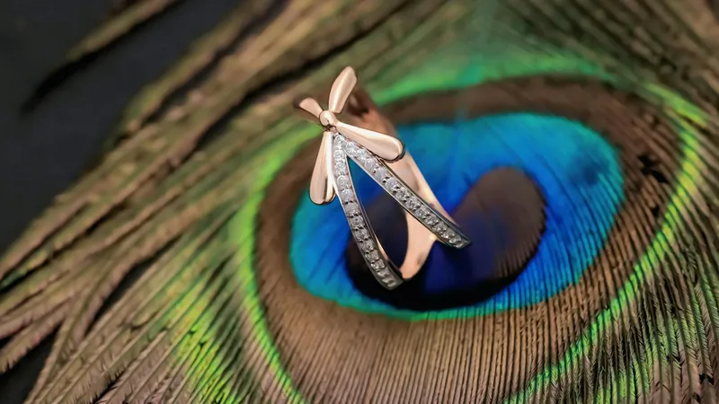

 종로 금방 추천 TOP 5 — 금반지 가격과 품질 직접 비교 2025년 5월 10일 종로구 · 귀금속 상가 종로 금거리에서 직접 발품 팔아 비교한 금방 5곳. 14k 금반지 기준 가격 차이가 30% 이상 나는 곳도 있었다.
14k vs 18k vs 24k — 금반지 캐럿별 차이 완전 정리 2025년 5월 5일 금 악세서리 가이드 캐럿(k)은 금의 순도. 24k는 순금, 18k는 금 75%, 14k는 금 58.5%. 일상 착용용 vs 투자용 선택 기준을 정리했다.